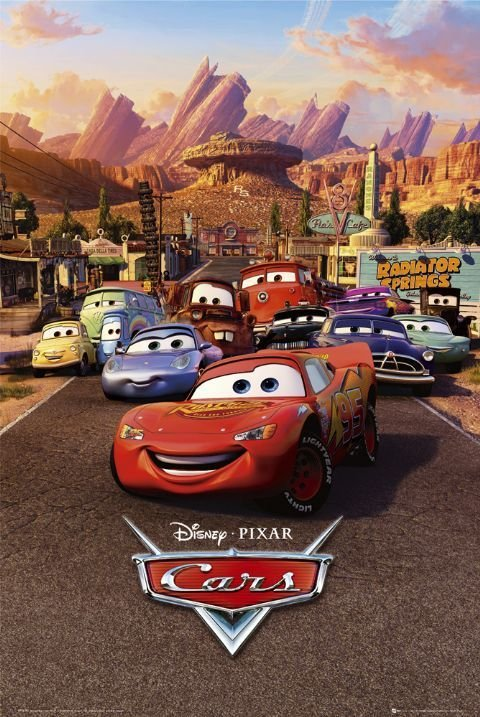

Cars: Archivos ocultos
Aquí veras toda la información que oculta esta obra maestra. Ya sea la idea original, las músicas usadas, el estilo de animación y escenas eliminadas.

Ficha técnica
Los datos principales de la producción de Cars (2006).
Año de estreno
2006
Estudio
Pixar Animation Studios
Distribución
Walt Disney Pictures
Director
John Lasseter
Compositor
Randy Newman
Género
Animación y comedia
The Yellow Car : 1996 (La idea original de Cars)
Una historia que no tendría nada que ver con la película de 2006
Originalmente, el protagonista sería un pequeño auto eléctrico extranjero (el de la foto) que era altamente subestimado y menospreciado por lo pequeño que era, pero sobretodo por ser eléctrico. Al pobre lo intentaron mandar a Mexico y encima cayó preso al llegar, pero por suerte logra salir tras conocer a un auto que sería la primera versión de Filmore. Al llegar a su pueblo del cúal fue echado, se organizaba una carrera de la cúal nuestro Yellow Car entraría y competiría contra el que sería el Chick Hicks de los 90s. Al igual que Chick, este antagonista también era un tramposo y lamentablemente humilla al amarillito, pero descubren que tenía modificaciones ilegales y lo descalifican. Tras ello, el coche amarillo es declarado ganador por haber quedado segundo, gracias a su victoria los autos eléctricos comenzaron a ser fabricados en masa y que hasta incluso llegaría a tener novia. Pero todo esto solo son bocetos, por lo que nunca fue animada y no salió esta primera versión de la película.

Animación y diseño


Animación primitiva y escenas eliminadas
En la primera foto, se observa el estilo de animación que tuvo el primer tráiler de Cars, donde precisamente es lo que más llama la atención al ser más simple, primitiva y peor en comparación al resultado final. El auto es la fase beta del Rayo McQueen, donde compartía diseño con todos los demás autos y usaba el número 57 en esa época para referenciar el año en el que nació John Lasseter. Además, el fragmento de esta escena fue reutilizado para la primer película al comienzo de la primera carrera. Se teoriza que este tráiler fue hecho entre 1999-2001, cerca de los años en los que las peliculas Toy Story 2 y Bichos fueron estrenadas. Un ultimo detalle sería que en este tráiler McQueen sería un corredor más competitivo al también defenderse de los intentos de la fase beta de Chick Hicks de empujarlo fuera en vez de simplemente pasarsela esquivando acometidas.
En la segunda foto, vemos una de las escenas eliminadas de la primera película. Siendo la primera idea de como el Relampago Marquiños se perdería al caer de Mack, ya que en esta versión, Mack sí iría a descansar en media noche pero McQueen por impaciente se baja del traíler de Mack y se pone a conversar con otros autos. El problema llega cuando Mack sin saberlo se va sin Rayo sin saberlo, McQueen se dá cuenta y sale rapidamente tras el pero ya era muy tarde y se termina perdiendo en la carretera. Aquí acabaría la escena, pero también existe otra que es justo la continuación, donde cambiaría la forma en la que McQueen llegaría al pueblo. En vez de toparse con el Sheriff, McQueen se metería a un bosque lleno de autos sin vida a la oscuridad de la noche, donde al intentar salir asustado, uno de los autos se engancharía a McQueen pareciendo la cara de un alma en pena que no deja de perseguirlo, al final termina liberándose y saliendo del bosque, terminando ahí la escena siendo una versión más terrorifica que la oficial.
Música más popular
El ritmo de la carretera, aquí verás las canciones más populares de la película
Life is a highway:
Interpretada por Rascal Flatts (versión original de Tom Cochrane). Es la canción más famosa de toda la saga, la cual suena durante el viaje por carretera de Rayo McQueen y Mack. utiliza la metáfora de un viaje por carretera para hablar de la vida: cómo está llena de curvas, obstáculos, momentos difíciles y subidas y bajadas, pero con el mensaje optimista de seguir adelante, no dejar que los problemas te derrumben y disfrutar del trayecto. Suena en la mítica escena en la que Rayo McQueen emprende su viaje hacia California.
Real Gone:
Interpretada por Sheryl Crow. Es el tema enérgico con el que abre la película mientras se muestra la gran carrera de la Copa Pistón. Es la canción que abre la película y suena durante la emocionante carrera inicial en la Copa Pistón. Habla de la velocidad, la energía juvenil, la intensidad del mundo moderno y la búsqueda de una libertad auténtica, reflejando la actitud arrogante y acelerada que tiene Rayo McQueen al principio de su historia
Route 66:
Interpretada por John Mayer (y con versiones clásicas como la de Chuck Berry en el filme). Es el himno que acompaña el descubrimiento de Radiador Springs y la historia de la histórica carretera. Es un tema más tranquilo y reflexivo. Trata sobre los momentos de soledad, la tristeza o cuando la vida se siente gris y llena de obstáculos (representados por las nubes oscuras), transmitiendo el mensaje reconfortante de que, aunque no se vea en ese instante, el sol y un gran cielo azul siempre brillan detrás de ellas.